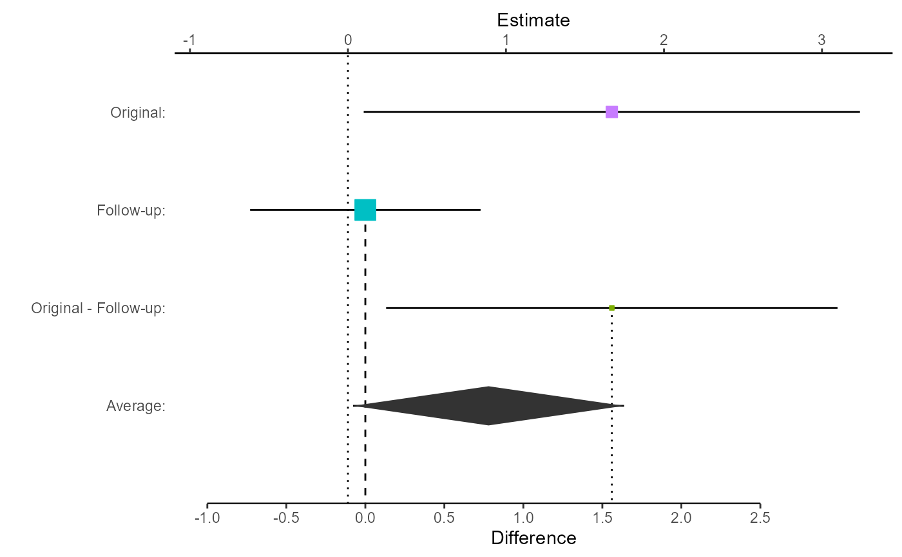
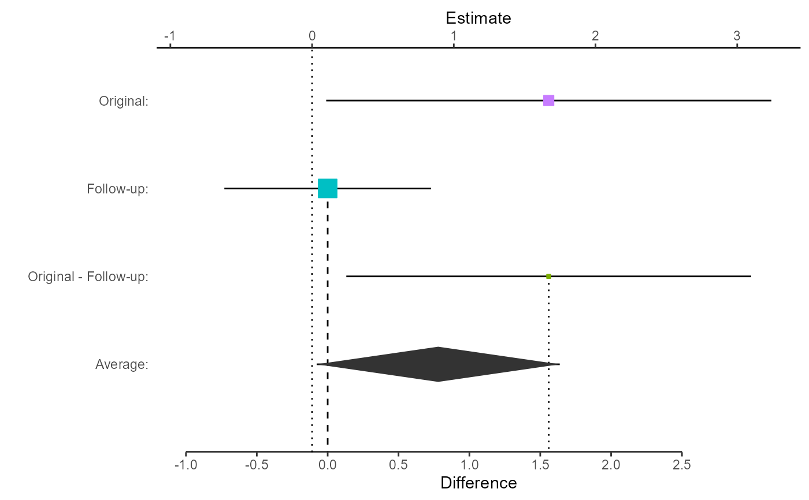

Plot to compare estimates from an original and follow-up study
Source:R/meta_plots.R
replicate.plot.RdGenerates a basic plot using ggplot2 to visualize the estimates from and original and follow-up study
replicate.plot(
result,
focus = c("Both", "Difference", "Average"),
reference_line = NULL,
diamond_height = 0.2,
difference_axis_ticks = 5,
ggtheme = ggplot2::theme_classic()
)Arguments
- result
a result matrix from any of the replicate functions in vcmeta
- focus
Optional specification of the focus of the plot; defaults to 'Both'
Both - a bit busy; plots each estimate, differencence, and average
Difference - plot each estimate and difference between them
Average - plot each estimate and the average effect size
- reference_line
Optional x-value for a reference line. Only applies if focuse is 'Difference' or 'Both'. Defaults to NULL, in which case a reference line is not drawn.
- diamond_height
Optional height of the diamond representing average effect size. Only applies if focus is 'Average' or 'Both'. Defaults to 0.2
- difference_axis_ticks
Optional requested number of ticks on the difference axis. Only applies if focus is 'Difference' or 'Both'. Defaults to 5.
- ggtheme
optional ggplot2 theme object; defaults to theme_classic()
Value
Returns a ggplot object. If stored, can be further customized via the ggplot API
Examples
# Compare Damisch et al., 2010 to Calin-Jageman & Caldwell 2014
# Damisch et al., 2010, Exp 1, German participants made 10 mini-golf putts
# Half were told they had a 'lucky' golf ball; half were not
# Found a large but uncertain improvement in shots made in the luck condition
# Calin-Jageman & Caldwell, 2014, Exp 1, was a pre-registered replication with
# input from Damisch, though with English-speaking participants
#
# Here we compare the effect sizes, in original units,for the two studies
# Use the replicate.mean2 function because the design is 2-group between-subs
library(ggplot2)
damisch_v_calinjageman_raw <- replicate.mean2(
alpha = 0.05,
m11 = 6.42,
m12 = 4.75,
sd11 = 1.88,
sd12 = 2.15,
n11 = 14,
n12 = 14,
m21 = 4.73,
m22 = 4.62,
sd21 = 1.958,
sd22 = 2.12,
n21 = 66,
n22 = 58
)
# View the comparison:
damisch_v_calinjageman_raw
#> Estimate SE t p LL
#> Original: 1.67 0.7633058 2.1878519 0.03803154 0.09964253
#> Follow-up: 0.11 0.3682078 0.2987443 0.76566558 -0.61922358
#> Original - Follow-up: 1.56 0.8474743 1.8407638 0.07340024 0.13153488
#> Average: 0.89 0.4237372 2.1003587 0.04232406 0.03245567
#> UL df
#> Original: 3.2403575 25.54543
#> Follow-up: 0.8392236 116.88772
#> Original - Follow-up: 2.9884651 38.36331
#> Average: 1.7475443 38.36331
# Now plot the comparison, focusing on the difference
replicate.plot(damisch_v_calinjageman_raw, focus = "Difference")
# Plot the comparison, focusing on the average
replicate.plot(damisch_v_calinjageman_raw,
focus = "Average",
reference_line = 0,
diamond_height = 0.1
)
 # Kind of busy, but plot the comparison with both difference and average
# In this case, store the plot for manipulation
myplot <- replicate.plot(
damisch_v_calinjageman_raw,
focus = "Both",
reference_line = 0
)
# View the stored plot
myplot

# Change x-labels and study labels
myplot <- myplot + xlab("Difference in Putts Made, Lucky - Control")
myplot <- myplot + scale_y_discrete(
labels = c(
"Average",
"Difference",
"Calin-Jageman & Caldwell, 2014",
"Damisch et al., 2010"
)
)
# View the updated plot
myplot
# Kind of busy, but plot the comparison with both difference and average
# In this case, store the plot for manipulation
myplot <- replicate.plot(
damisch_v_calinjageman_raw,
focus = "Both",
reference_line = 0
)
# View the stored plot
myplot

# Change x-labels and study labels
myplot <- myplot + xlab("Difference in Putts Made, Lucky - Control")
myplot <- myplot + scale_y_discrete(
labels = c(
"Average",
"Difference",
"Calin-Jageman & Caldwell, 2014",
"Damisch et al., 2010"
)
)
# View the updated plot
myplot